iPhone・iPadでFeatherを用いてApp Store外のアプリをサイドロードする方法

サイドロードとは?
サイドロードとは、iOSならApp Store、AndroidならGoogle Play Store以外からアプリをインストールすることを指す。 これにより、アプリを特定のバージョンに戻したり、正規のアプリストアで配信されていないようなアプリをインストールできる。 Androidはapkと呼ばれるファイルを入手することで直接サイドロードできるが、iOSは制限が厳しく、一般的なユーザーはAltStoreやSideStore、Sideloadlyなどのツールを用いてサイドロードができるものの、サイドロードできるアプリが3つに制限される、7日に1回再署名が必要、通知機能が使えないなど大きなデメリットを有する。 EUのユーザーには完全なサイドロードの機能を提供しているが、EU外のユーザーがEUのユーザー向けのサイドロードの機能を解放するのはほぼ不可能だ。 完全なサイドロードの機能を利用するにはアプリ開発者向けのプログラムであるApple Developper Programに登録してサイドロードに必要な証明書を得るという方法があるが、これの年会費は99米ドル、2025年10月時点の日本円で約15,000円となっていて、安易にサイドロードのためだけに支払う金額ではないように感じられる。 そこで、Apple Developper Programの証明書を複数人のユーザーで共有して使うことで年間およそ1,000円から3,000円と比較的安い金額で完全なサイドロードができるようにするというサービスがいくつかある。 他にもDNSを用いて企業から流出した証明書を入手するという方法があるが、それらはAppleが失効させて使えなくなるリスクが大きいため、ここではよりリスクの少ない、AppTestersでの証明書の購入の手順とFeatherでIPAをサイドロードする方法まで解説する。
手順
証明書を購入する
Apple Developper Programの証明書を購入できるサービスは以下のようなものがある。
これらのサイトには一時的にアクセスできなくなっていたり、購入できなくなっていたりするものもある。 ここではAppTestersを用いて証明書を購入する手順を示す。
方法
1.Get UDIDのサイトを開く
以下のリンクから、デバイスのUDIDを取得できる。 ここで取得したUDIDは証明書を発行する際に必要になる。
2. "Get yoir UDID now" をタップする
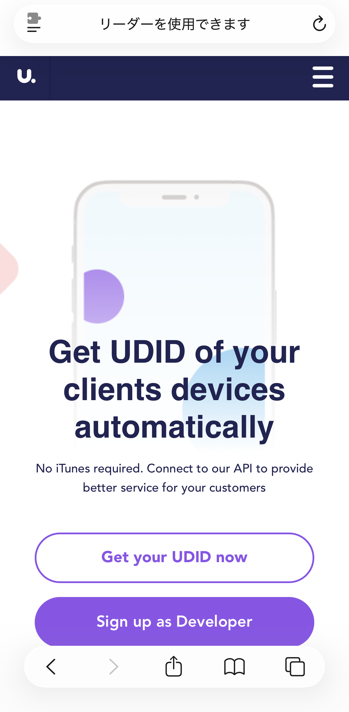
3. "Download" をタップする

4. "許可" をタップする
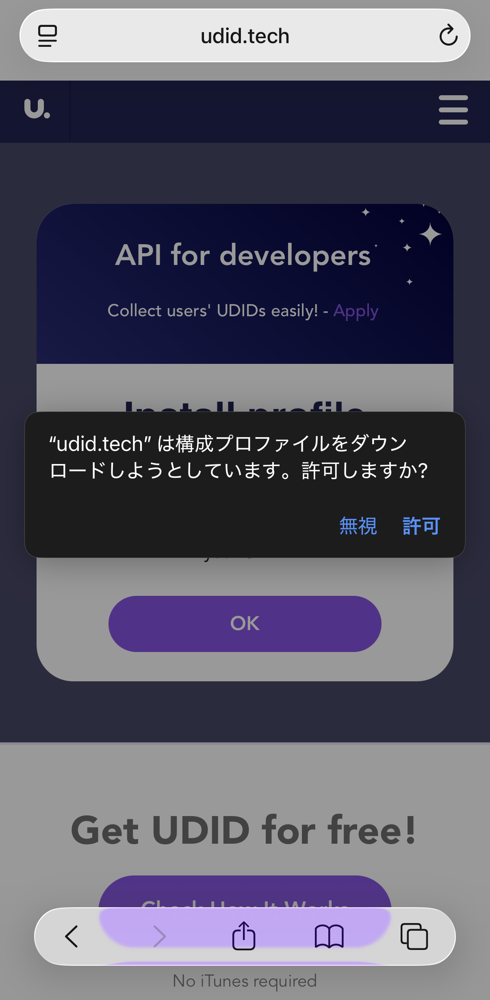
5.設定アプリを開く

6. "ダウンロード済みのプロファイル" をタップする
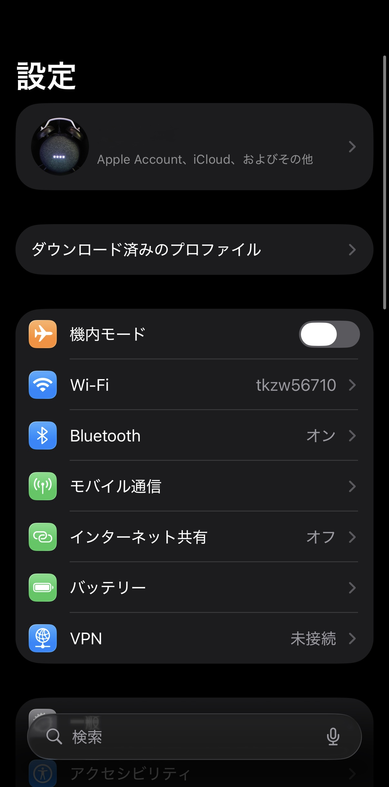
7. "インストール" をタップし、パスワードを入力する
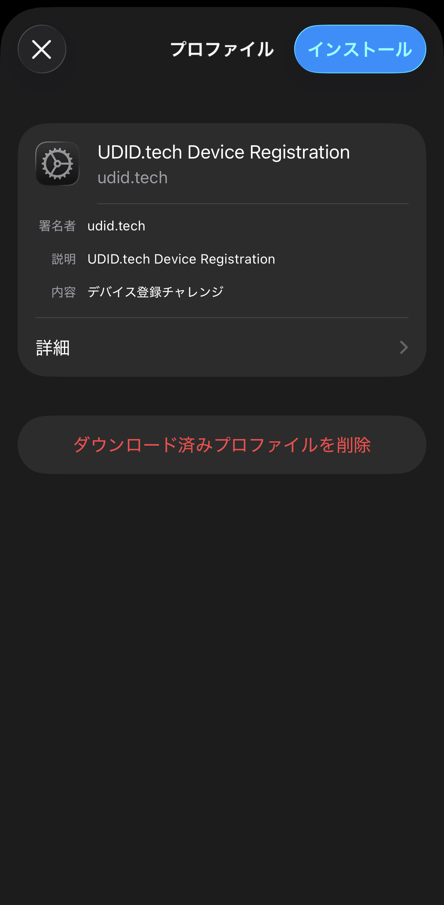
8. "インストール" をタップする
ここで自動的にGet UDIDのサイトに戻る。
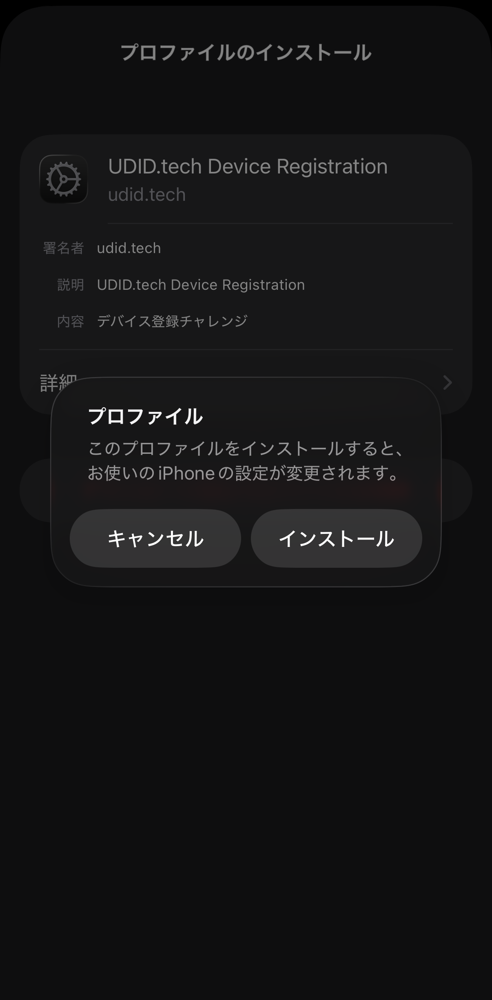
9.画面に表示されたUDIDをコピーする
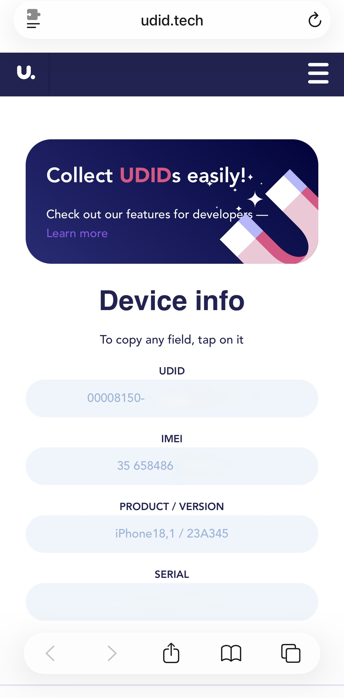
10.AppTestersのサイトを開く
以下のリンクから、AppTestersのサイトを開く。
11.購入するプランを選択する
AppTestersでは証明書のサポートについて3つのプランから選ぶことができる。 "Full revoke protection" とは、AppleがAppTestersのようなサービスで利用されている証明書を稀に失効させることがあり、その際に証明書をAppTestersが無料で再発行してくれる保証のことである。 Premium Planでは "Lifetime validity"と書かれていて永久に使えるように思えるが、端末のUDIDが必要になることからもわかるように機種変更すると以前の機種で利用していた証明書は新しい機種に引き継ぐことができない。 Ultimate Planでも5年間で最大2回までしか引き継ぎができない点に注意する必要がある。 また、iPhone以外のデバイスはEssential Planでは登録できないので、Premium PlanまたはUltimate Planを選ぶ必要がある。

12.支払いとUDIDの提出をする
支払いとUDIDの提出が終わったら、証明書のzipファイルがダウンロードできるようになるまで4営業日待つ。

13.証明書のzipファイルをダウンロードする
AppTestersから "Your Certificate is Ready!" というメールが届いたら、AppTestersにログインして右上の "≡" をタップして "Orders" を開き、証明書をダウンロードする


14.ダウンロードした証明書のzipファイルを展開する
ファイルアプリでダウンロードした証明書のzipファイルをタップすると展開でき、certificate infoファイル、mobileprovisionファイル、p12ファイルが入ったフォルダが生成される。 certificate infoファイルにはp12ファイルのパスワードが記載されている。
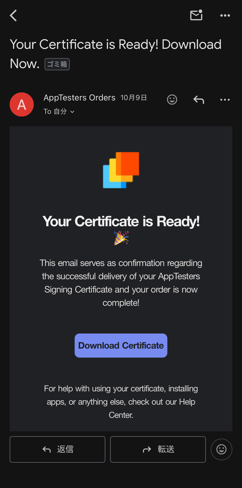
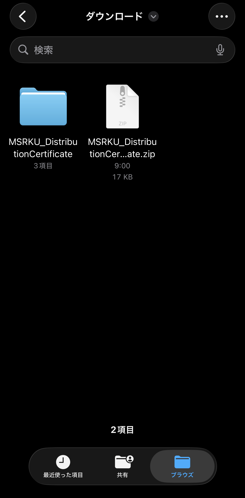

AppTesters IPA Signerを用いてFeatherをサイドロードする
ここではAppTesters IPA Signerを用いてFeatherをサイドロードし、使えるようにする。 また、Featherに限らずAppTesters IPA Signerでアプリをサイドロードする手順はこれと同様である。 さらに、サイドロードしたアプリをアップデートする際も同様の手順で行う。
方法
1.FeatherのIPAをダウンロードする
以下のリンクからFeatherのIPAをダウンロードする。
2.AppTesters IPA Signerのサイトを開く
以下のリンクからAppTesters IPA Signerのサイトを開く。
3.FeatherのIPA、p12ファイル、mobileprovisionファイルをアップロードする
サイドロードするIPAと、先ほどダウンロードした証明書のzipファイルを展開してでてきたp12ファイル、mobileprovisionファイルをアップロードする。
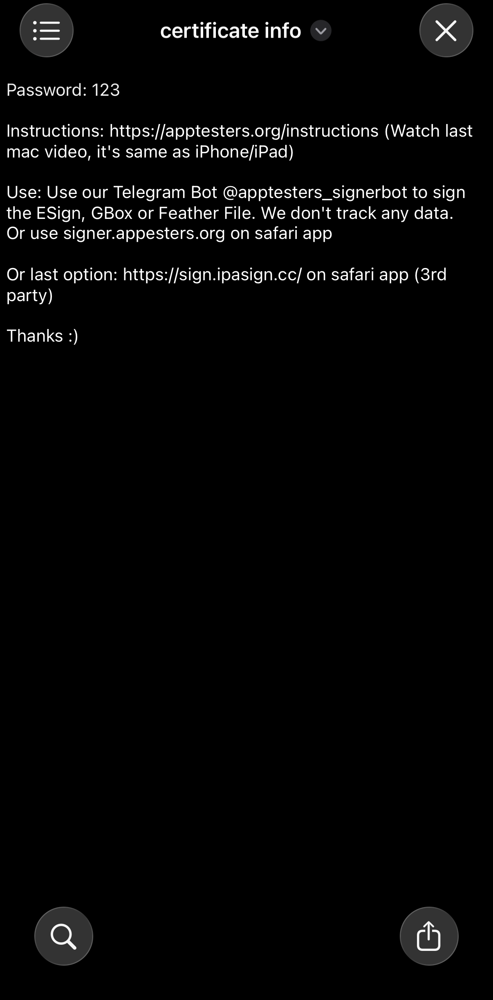
4.p12ファイルのパスワードを入力する
先ほどダウンロードした証明書のzipファイルを展開してでてきたcertificate infoファイルを開くとp12ファイルのパスワードが記載されている。

5. "Upload and Sign" をタップする
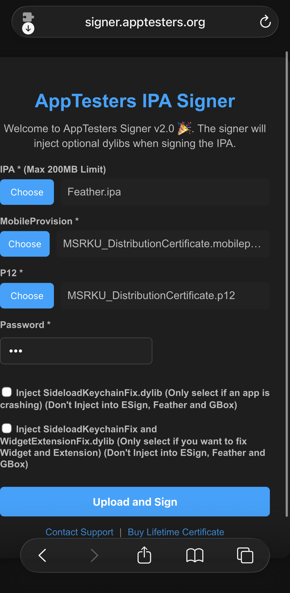
6. "Install" をタップする
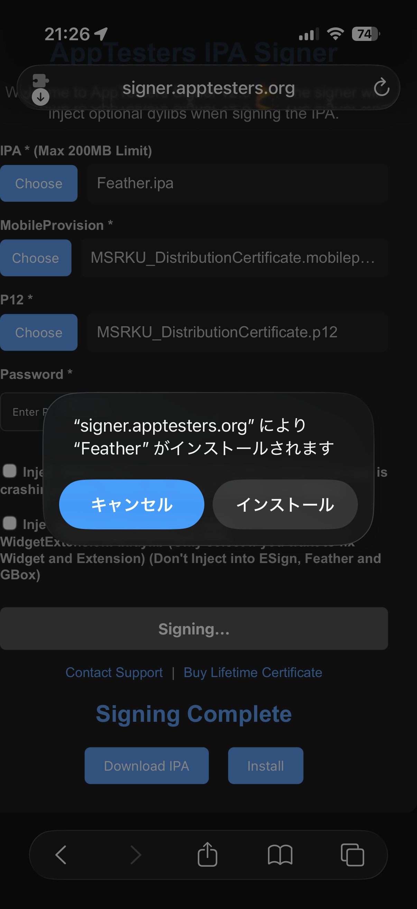
7. "インストール" をタップする

Featherを用いてサイドロードする
 Featherより引用
Featherより引用
ここではFeatherによるサイドロードの方法を解説する。 AppTesters IPA Signerだけでもアプリのサイドロードはできるが、Featherを使うとサイドロード毎のmovileprovisionファイルとp12ファイルのアップロード、p12ファイルのパスワードの入力が不要になり、さらに証明書やサイドロードしたアプリの管理が便利になる。 Featherを含むサイドロードしたアプリをアップデートする際も11から同様の手順で行う。
方法
1.Featherを開く
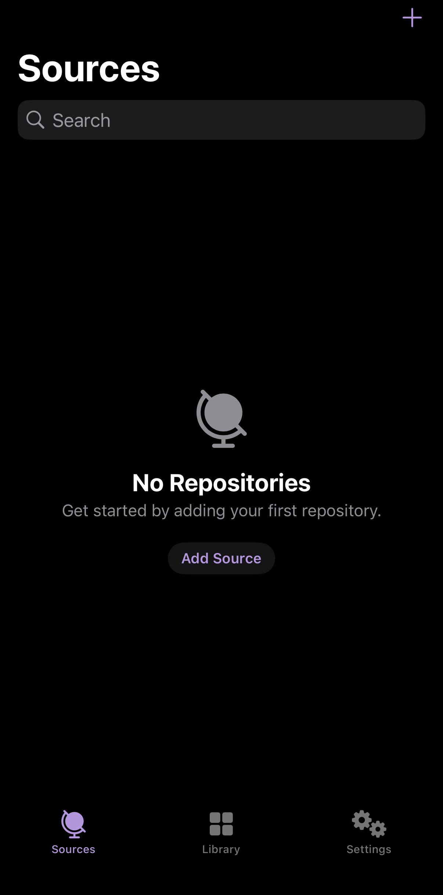
2. "Settings" タブの "Certificates" を開く
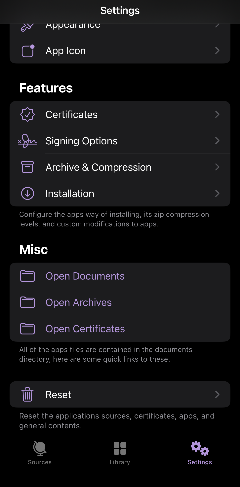
3. "Import" をタップする
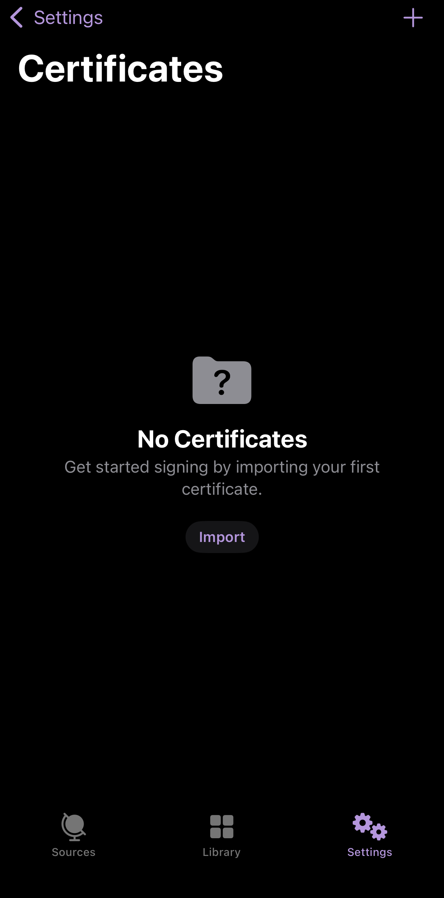
4. "Import Certificate File" をタップする

5.p12ファイルをインポートする

6. "Import Provisioning File" をタップする
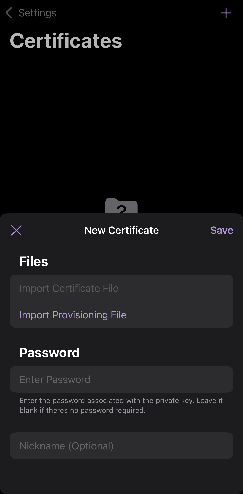
7.mobileprovisionファイルをインポートする

8.p12ファイルのパスワードを入力し、 "Save"をタップする
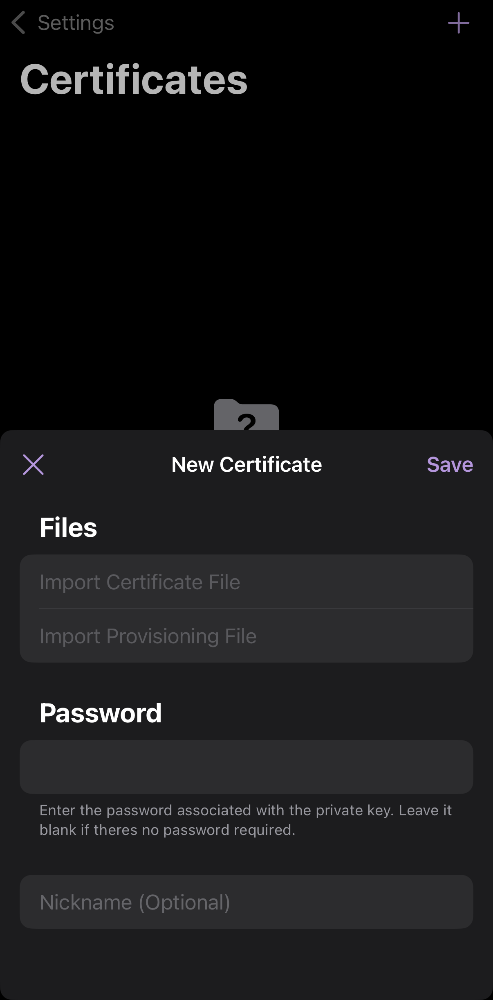
9. "Settings" タブの "Signing Option" を開く
10. "Install After Signing" をオンにする
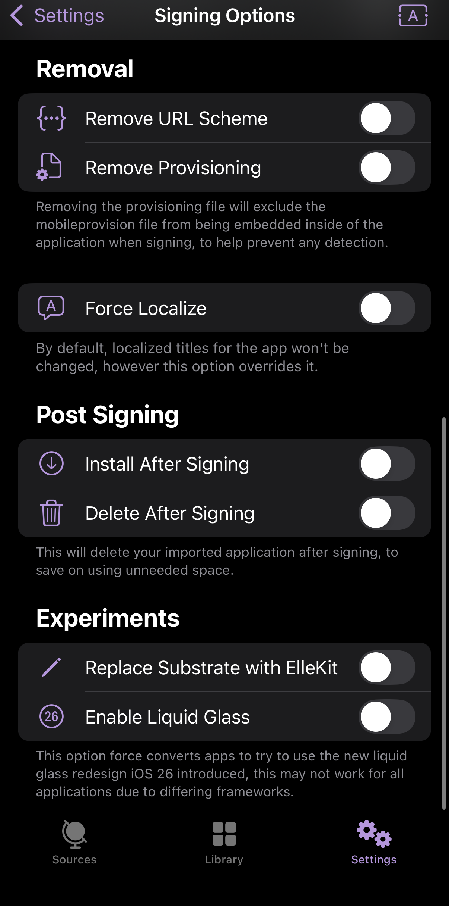
11. "Library" タブで "Import" をタップする

12.サイドロードするアプリのIPAをインポートする
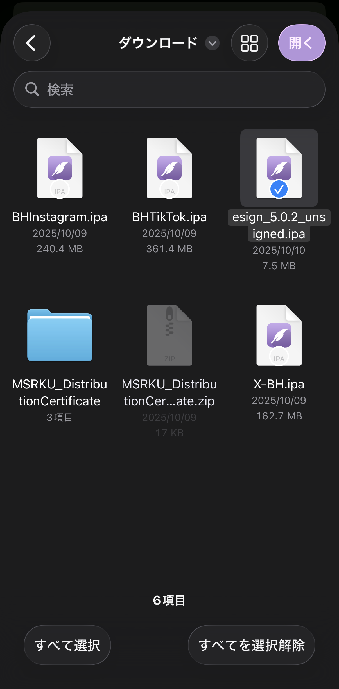
13.インポートしたIPAの横の "Sign" をタップする

14. "Start Signing" をタップする
この画面ではアプリ名やアプリアイコンなどを変更できる。
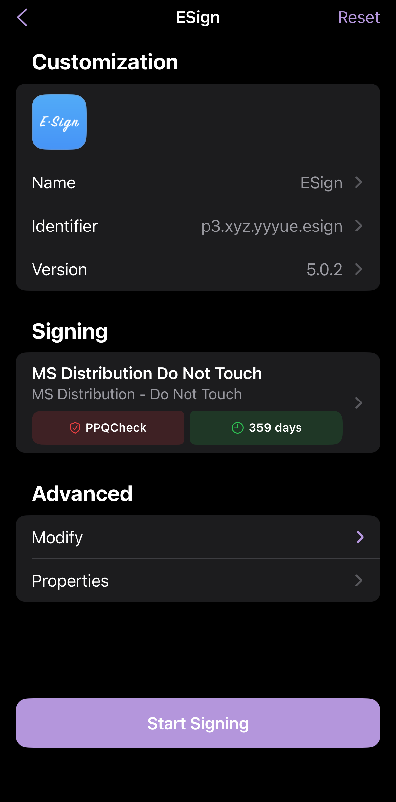
15. "インストール" をタップする

アプリのインストールが完了しない場合の対処法
アプリの署名まではできるがインストールされないという場合がある。 そのときは一度インストールの手順を変えてみることを推奨する。 以下はインストール方法の変更手順である。
1. "Settings" タブから "Installation" をタップする
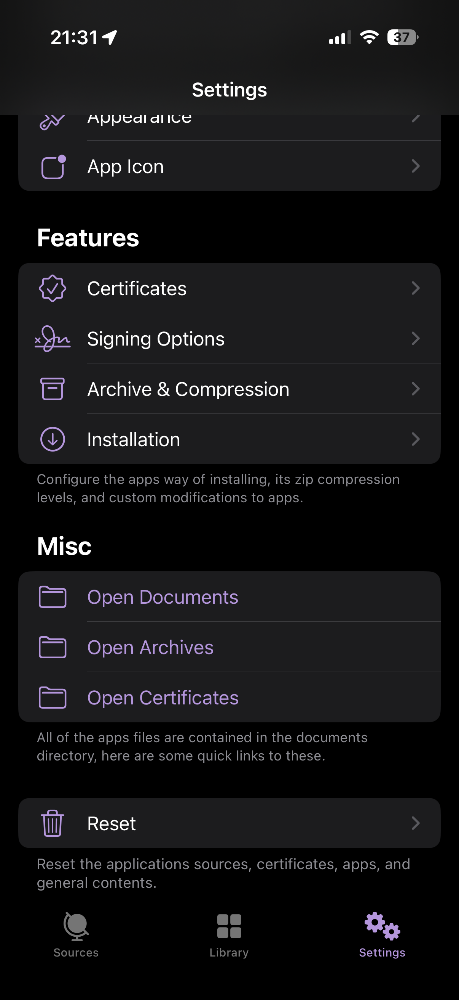
2. "Server Type" をタップする
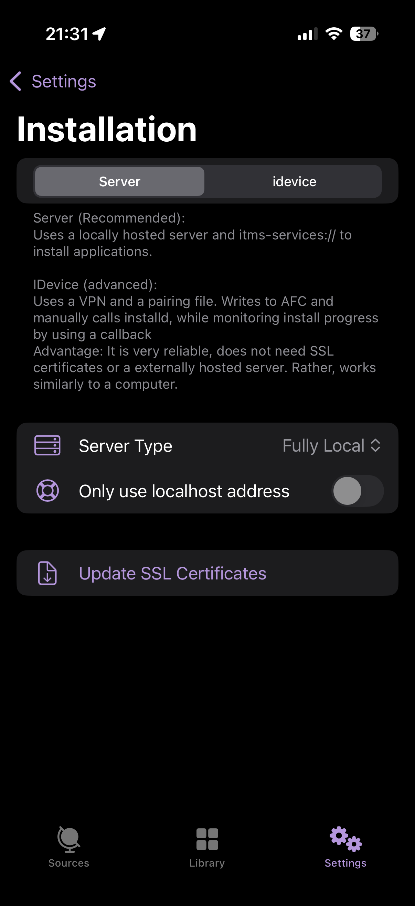
3. "Fully Local" と "Semi Local" を切り替えてみる
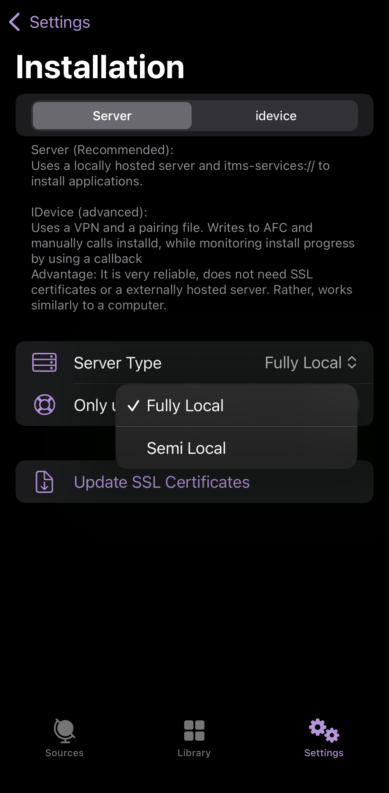
Featherによるサイドロードのメリット
･7日に1度アプリを再署名する必要がない
SideloadlyやAltStore、SideStoreと違い、7日に一度アプリを再署名しなくても証明書が有効な期間はサイドロードしたアプリが使える。
･サイドロードできるアプリ数に制限がない
SideloadlyやAltStore、SideStoreと違い、4つ以上のアプリをサイドロードできる。 App IDの制限もない。
･サイドロードしたアプリで通知機能が使える
SideloadlyやAltStore、SideStoreと違い、サイドロードしたアプリの通知機能が使える。
･Apple Developper Programよりも安い金額で証明書を入手できる
年間およそ1,000円から3,000円とApple Developper Programよりも安い金額で証明書を入手できる。
･企業から流出した、無料で入手できる証明書よりもAppleに失効させられるリスクが小さい
企業から流出した、無料で入手できる証明書はすぐに使えなくなる可能性が高い。
Featherによるサイドロードのデメリット
･証明書の再発行や再購入の手間がある
1年ごと、もしくは端末を機種変更するたびに保証外なら新しく証明書を購入するか、保証内なら別の証明書を発行する必要がある
･証明書の入手にコストがかかる
年間およそ1,000円から3,000円かかる。
･Appleに証明書を失効させられるリスクがある
企業から流出した、無料で入手できる証明書よりは可能性が低いがもし失効させられた場合、新しい証明書が発行されるまでしばらくサイドロードはできなくなり、サイドロードしたアプリは使えなくなる。
サイドロードの動き
先述のようにiOSでは厳しく制限されているサイドロードだが、これにはもちろんメリットがある。 Appleにとっての主なメリットは、アプリストアをApp Storeに限定することでアプリ内の課金や定期購入などによる収益を独占できること。 ユーザーにとっての主なメリットは、App Storeでは審査に通ったアプリしか配信されないため、危険なアプリをインストールするリスクを避けられること。 しかし、EUが2024年にEU域内で販売される端末にサイドロードの解放を義務化し、日本政府も同じような方針を打ち出している。 サイドロードが解放されれば他のアプリストアが使えるようになって課金や定期購入の金額が安くなったり、App Storeで配信されていないアプリをインストールできるようになったりとユーザーにとって利便性が上がるものの、セキュリティでの懸念点が大きくなる。 サイドロードはまさに両刃の剣である。
プロフィール

高度情報社会の最先端を駆け抜ける